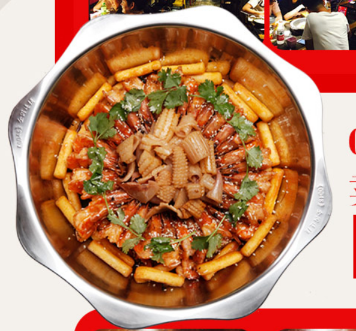
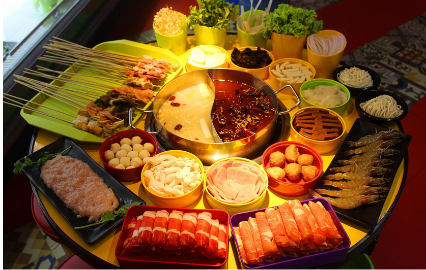
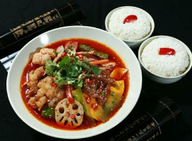
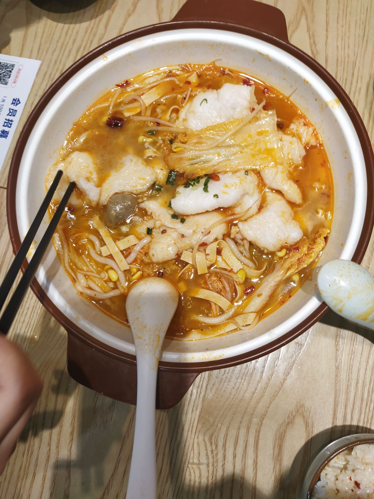

麻辣香锅
美食一：麻辣香锅发源于巴蜀地区，以四川、重庆等地方麻辣风味融合而来，麻辣香锅源于土家风味，是当地老百姓的家常做法，以麻、辣、鲜、香、油、混混搭为特点。虽然麻辣香锅属于麻辣口味，但颇受全国食客喜爱。味道十分美味，而且口味多种多样，多种食材可任意搭配，可以满足大多数人的胃口喜好，烹饪时间短，4~7分钟即可出锅食用，是很多年轻人偏爱的一种微餐饮。在江大附近众多的麻辣香锅店中，我比较喜欢金顺，价格便宜 、各种菜品齐全还十分入味。
火锅呀
美食二：我们寝室每月不可缺少的一次小团建，去附近饱餐一顿，既增加了和室友的革命友谊，又可以品位这盛世佳肴，岂不乐哉。火锅不仅是一种烹饪方式，而且蕴含着饮食文化的内涵，为人们品尝倍添雅趣，也是一种文化模式。从火锅的形式上，男女老少、亲朋好友围着热气腾腾的火锅，不难看出，有一种团圆的意味不，吃火锅时，把臂共话，举箸大啖，温情荡漾，那真是“杯盘供语笑，灯火话平生”再适合不过了，那是符合了中国人的一种传统文化与情绪在里面。

三顾冒菜
美食三：三顾冒菜也是偏川味的一道菜，好吃不贵，让人流连忘返，是我们平时懒得出去吃放点外卖的不二选择，江大南门那家的三顾冒菜味道真的是绝了，我每次都没有吃剩过，可真算得上是舌尖上的美味了！
酸菜鱼
美味四：当酸菜鱼以草鱼为主料，配以泡菜等食材煮制而成，口味酸辣可口；鱼含丰富优质蛋白，能提供人丰富的蛋白质、矿物质等营养；酸菜中的乳酸可以促进人体对铁元素的吸收，还可以增加人的食欲。将大东门的何先生酸菜鱼也是我们经常大吃一顿之地，价格实惠，口味可清可重，相对于火锅这些它可便宜了不少，店里的小酥肉更是让人赞不绝口，是我们每次必点的小菜。